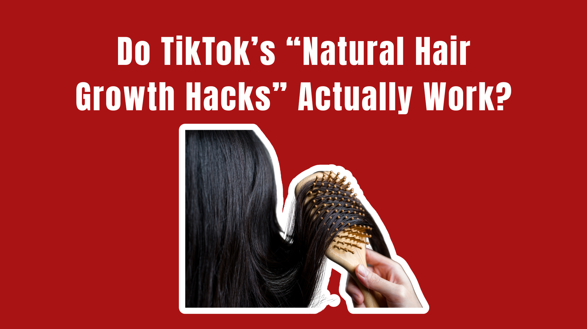
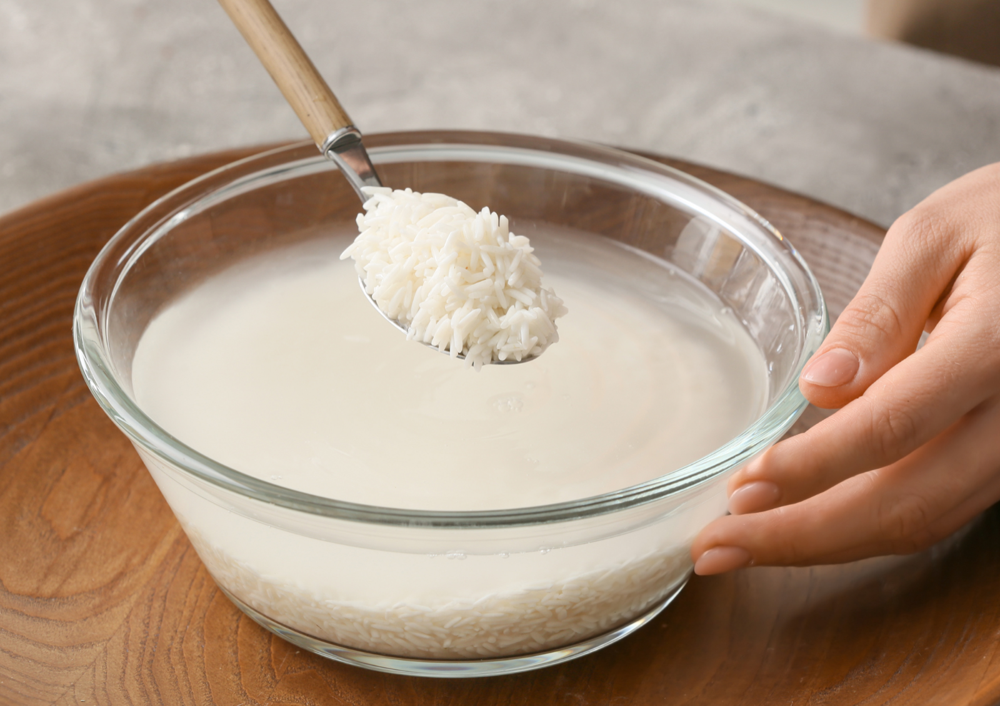

I have a complicated relationship with TikTok hair advice. The claims of “natural” ingredients doing miracles for hair growth have been circulating for a long time now. The problem? Hair doesn’t exactly work on TikTok time.
Still, I wanted to know whether any of these viral natural remedies actually made a noticeable difference — or whether I was just coating my scalp in things from my kitchen for no reason.
Hair grows slowly, and a few weeks isn’t enough to determine whether a product or ingredient has actually changed the hair-growth cycle. So instead of doing another short-lived social media challenge, I decided to give each trend enough time to observe visible growth and compare what I was seeing with my hair’s normal growth pattern.
I tested three of the biggest natural hair-growth trends: rosemary oil, rice water, and onion juice. I used each one separately and kept the rest of my hair routine as consistent as possible. Throughout the experiment, I paid attention to visible new growth, shedding, breakage, scalp condition, and how my hair felt overall. Of course, hair growth naturally varies, and factors like genetics, hormones, health, styling, breakage, and even how you measure your length can affect the result.
But it can tell you something useful about what the experience is actually like.
Here’s what happened.
Rosemary Oil
Verdict: The Most Promising — But Don’t Call It Nature’s MinoxidilRosemary oil was the one I had the highest hopes for. It’s also the one with the most interesting research behind it. A 2015 randomized comparative trial looked at rosemary oil versus 2% minoxidil in people with androgenetic alopecia over six months. The study found that both groups had an increase in hair count at six months, while there was no significant change at three months. While this doesn’t equate that rosemary oil can replace minoxidil, I still decided to give it a try.
My routine consisted of diluting the rosemary oil before applying it and massaging it into my scalp rather than dumping essential oil directly onto my skin. I did this several times a week and left it on before washing. The first thing I noticed was actually the scalp massage. My scalp felt warmer and more stimulated immediately afterward, although that’s not evidence that new hair follicles were suddenly waking up. By the second week, I also noticed less dryness around my scalp. However, the hair-growth part was harder to judge. Eventually, I could see normal new growth, but I couldn’t confidently say that it was growing faster than it normally would. There weren’t suddenly dozens of new hairs around my hairline. What I did notice was that my hair seemed healthier overall, and I experienced less concern about dryness and breakage. But it is important to note that if your hair is breaking less, you may retain more of the length you’re already growing. That can make your hair appear to be growing faster even if the growth rate at the follicle hasn’t actually changed.
Conclusion: Rosemary oil is the trend I’d be most willing to continue, but the evidence doesn’t support expecting dramatic results. If you’re trying it for hair growth, think in terms of months rather than viral-video timelines.
Rice Water
Verdict: Better for Hair Care Than Hair Growth
Rice water might be the most photogenic hair trend on this list. TikTok is full of people rinsing their hair with cloudy rice water and revealing impossibly shiny lengths afterward. The usual explanation is that rice water contains nutrients and inositol that can strengthen the hair and help it resist damage. Rice water has been associated with ingredients that may improve the condition of the hair fiber, and inositol has been investigated for its ability to interact with damaged hair. But there still isn’t good clinical evidence showing that applying rice water to your scalp actually makes human hair grow faster.
That distinction became pretty obvious during my test.
I didn’t see faster growth. What I did notice was that my hair felt different after using it. My lengths felt a little smoother and more substantial, particularly after washing. My hair also seemed less prone to tangling. If your hair is breaking less, you retain more of the length you’re already growing. Suddenly your ponytail looks longer and your ends look fuller, even though your follicles haven’t necessarily started producing hair at a faster rate.
That’s very different from stimulating new growth.
There was also a downside. After repeated use, my hair started feeling a little stiff rather than soft. That’s not particularly surprising: rice water is starchy, and some hair types may not love frequent applications.
The TikTok videos rarely mention that part.
Conclusion: Rice water may help your hair look and feel healthier by reducing some types of damage or improving the feel of the hair fiber. But I wouldn’t call it a hair-growth treatment based on the evidence we currently have.
Onion Juice
Verdict: The Evidence Is More Interesting Than the Trend — But So Is the SmellI knew onion juice was going to be unpleasant. I didn’t realize quite how unpleasant.
The internet explanation is usually that sulfur and other compounds in onions can stimulate the scalp and encourage hair growth. But unlike rice water, onion juice actually has a small clinical study behind the hair-regrowth claim. In a 2002 study, researchers tested crude onion juice against tap water in people with patchy alopecia areata, an autoimmune form of hair loss. Participants applied the treatment twice daily for two months. The onion-juice group showed substantially more regrowth than the water group.
But here’s the part TikTok leaves out: Alopecia areata is not the same thing as ordinary thinning or genetic hair loss, and the study involved only had 38 participants.
During my usage of onion juice, I eventually saw normal new growth, but I couldn’t confidently say that onion juice had accelerated it. I also noticed that my scalp felt irritated after some applications, which made me less enthusiastic about continuing. And of course, there was the smell.
I washed my hair afterward, but there was still a faint onion smell that seemed determined to survive shampoo, conditioner, and my dignity. More importantly, I didn’t see enough of a difference to make the inconvenience worthwhile for me.
Could onion juice potentially have a role in certain types of hair loss? The existing study is interesting enough that I wouldn’t dismiss the ingredient entirely. But taking one small study involving alopecia areata and turning it into “onion juice grows everyone’s hair” is a pretty significant leap.
Conclusion: Onion juice has more scientific evidence behind it than I expected — but that evidence is narrow, old, and specific to alopecia areata. It isn’t proof that onion juice is a universal hair-growth treatment.
What I Actually Took Away From This
Even when you give a trend enough time to see normal hair growth, it can still be difficult to determine whether you’re seeing an actual increase in growth or simply better length retention. Just because the trend went viral does not mean it actually works.
Hair-growth claims are particularly easy to exaggerate because the actual process is so slow. By the time you’re able to see a meaningful difference, you’ve often been doing the routine for months.
So if you’re tempted by the next TikTok promising “INSANE HAIR GROWTH,” remember what I learned after testing three of the internet’s favorite natural remedies:
Disclosure: All materials were purchased independently with personal funds. This was a personal-use experiment run by one tester over three consecutive months, not a controlled study — hair growth varies with genetics, hormones, health, styling, and breakage, so your results will differ. This article is educational and is not medical advice. If you are experiencing hair loss, talk to a dermatologist before adding essential oils or kitchen ingredients to your scalp routine.